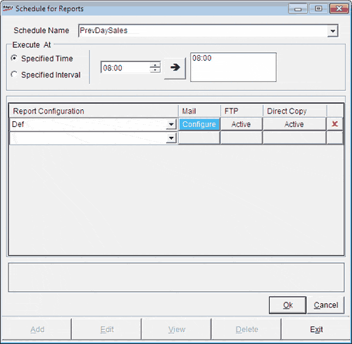

The Schedule for Reports window is as shown.

Schedule Name: Enter a meaningful name for the report schedule configuration you are doing.
Execute At: Select Specified Time or Specified Interval to generate and send the report as per your requirement.
If you have selected Specified Time, specify the time and click to include that in the time list.
If you have selected Specified Interval, specify the Start Time and the time lapse required between two report generations in terms of hours and minutes.
The reports list and configurations for communication options are specified in the grid.
Report Configuration: Select the name of the report configuration that is to be used for report generation. You are scheduling the generation and transmission of this report.
Mail: Click the Configure button to specify the mail configuration.
FTP: Click the Configure button to specify the FTP configuration.
Direct Copy: Click the Configure button to specify the direct copy configuration.